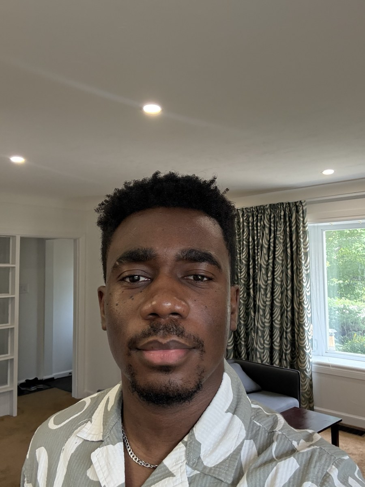

About me
I’m a multidisciplinary designer working across UX, graphic design, illustration and motion, and more and more in 3D.
I trained as an architect in Nigeria, and that training still shapes how I solve problems: with structure, a plan and attention to how people move through a space. I moved into graphic design and UX through boot camps, then came to Canada to study Human-Centred Design and Interactive Media Management at Algonquin College.
My work has ranged from branding an ice cream concept, to civic education research with Elections Canada, to brand campaigns at Manitobah Mukluks. Whatever the project, I keep the work simple, clear and purposeful.

Experience
- 2025–2026
Junior graphic designer
Manitobah MukluksDigital and print work for a footwear brand: social media, Klaviyo email campaigns, lookbooks, packaging, in-store signage and print-ready files. I worked on a three-person design team and presented concepts to the senior designers and the CMO.
- 2024–2025
Graphic designer, co-op
Algonquin CollegePrint and digital marketing for student engagement, including a full campaign for the Interactive Media Management program: photography, banners in every size and video ads.
- 2023–2024
UX designer and researcher
Algonquin College HCD Lab with Elections CanadaApplied research on civic literacy, including interviews, personas, journey maps, information architecture and Figma prototypes. This work led to CivicXcellence.
- 2021–2023
Junior architect and graphic designer
Space Faculty, LagosSite inspections, renovations, client-ready renderings and presentations, plus graphic design for the studio.
Education
- Post-graduate certificate, Interactive Media ManagementAlgonquin College. Dean’s List 2025
- Post-graduate certificate, Interdisciplinary Studies in Human-Centred DesignAlgonquin College. Dean’s List 2024
- BSc ArchitectureCovenant University
Toolkit
- DesignFigma, FigJam, Illustrator, Photoshop, InDesign
- Motion and 3DAfter Effects, Premiere Pro, Blender
- ArchitectureRevit, AutoCAD
- WorkflowMiro, Trello, Asana, Klaviyo, WordPress